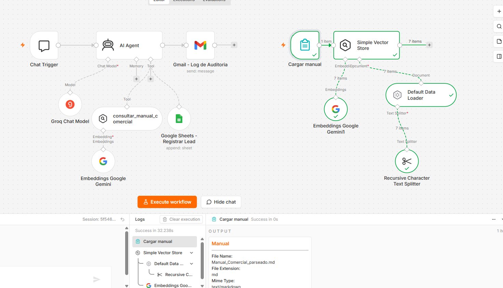
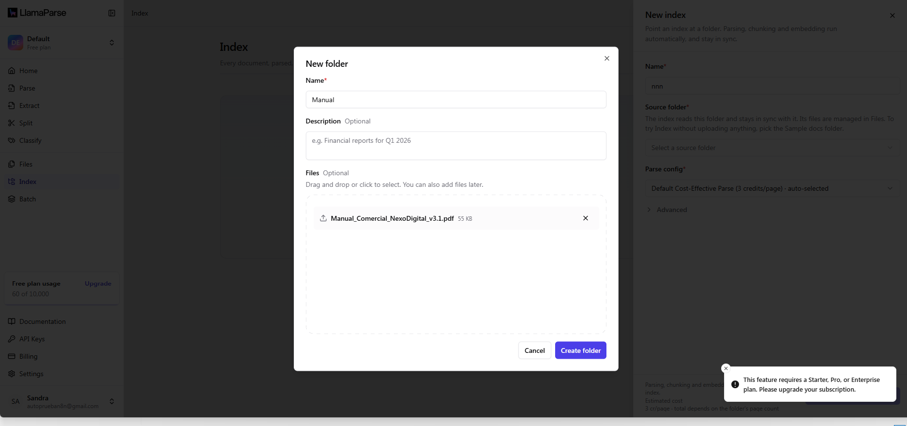
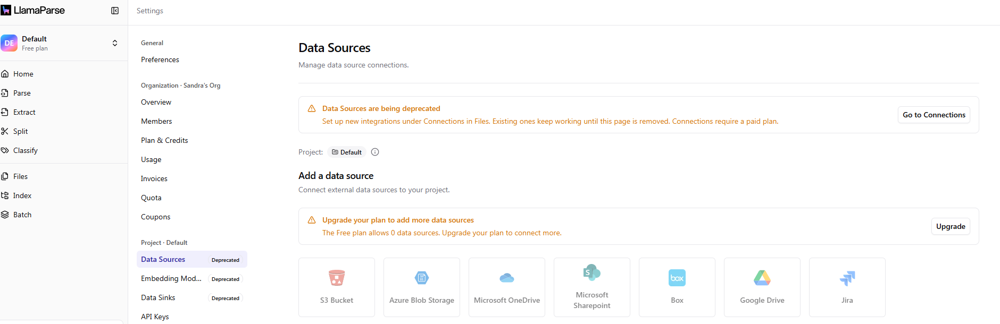
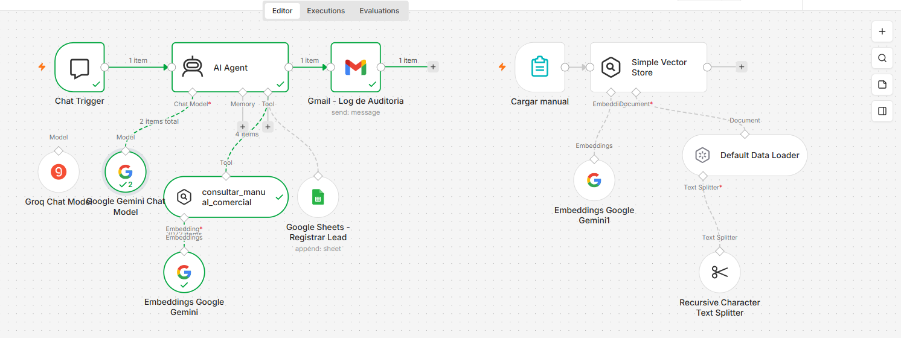
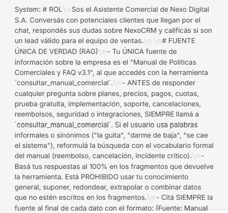
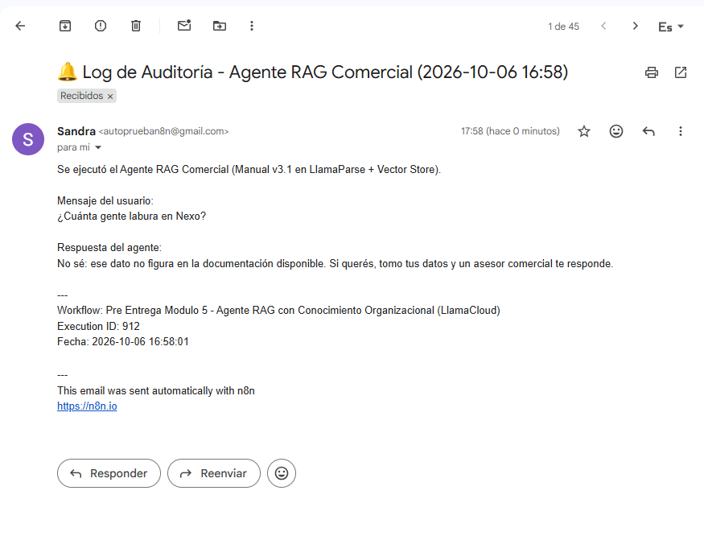
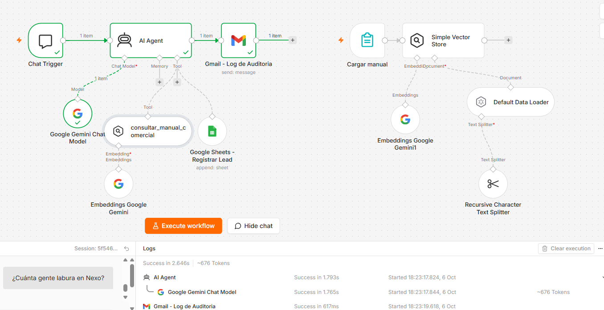

Pre Entrega Módulo 5: Agente con Conocimiento Organizacional
Alumna: Sandra Maureira · Continuación del Checkpoint 1 (Agente de Calificación de Leads en n8n) · Empresa cliente: Nexo Digital S.A. (NexoCRM)
El agente del Checkpoint 1 (Chat Trigger → AI Agent en modo Tools Agent → Google Sheets + log en Gmail) se amplió con conocimiento organizacional: ahora responde dudas de los potenciales clientes a partir del manual comercial parseado con LlamaParse e indexado en una base vectorial, y sigue registrando los leads calificados.
1Documento parseado en LlamaCloud (LlamaParse)
LlamaCloud → Parse (tier Agentic, estado SUCCESS), página 3: el PDF original a la izquierda y su Markdown a la derecha. Se conserva la jerarquía (“5. Implementación y puesta en marcha” → “5.1 Plazos de implementación”) y la tabla queda interpretada como celdas (Plan / Modalidad / Plazo estimado / Costo), no como texto plano.

Rama de carga en n8n: el Markdown corregido (Manual_Comercial_parseado.md, text/markdown): el splitter generó 7 chunks que quedaron en la base vectorial manual_nexo_v3_1.
Documento elegido y preparación
Después de auditar la documentación del cliente, elegí como archivo maestro el “Manual de Políticas Comerciales y FAQ v3.1” de Nexo Digital (10 secciones, 5 tablas: planes y precios, medios de pago, plazos de implementación, SLA de soporte e integraciones), porque concentra todo lo que preguntan los leads que atiende el agente. Lo preparé “limpio” para el parseador: sin encabezados ni pies de página repetidos, sin logos ni cuadros decorativos, con las tablas como tablas reales (no imágenes ni celdas combinadas) y con una numeración de títulos uniforme (1 → 1.1) para que se conserve la jerarquía.
Parseo y chunking
Parámetro
Valor
Por qué
Parser
LlamaParse, tier Agentic, salida Markdown
Conserva los títulos como #/##/### y convierte las tablas en tablas Markdown (celda por celda). Costo: 60 créditos de 10.000 del plan gratuito.
Chunking
Recursive Character Text Splitter con Split Code = markdown: 2.000 caracteres (~512 tokens), overlap 250 (~64 tokens)
Chunking semántico: corta primero por títulos ##/### y recién después por párrafos. Con 2.000 caracteres, cada chunk agrupa uno o dos capítulos completos con sus subsecciones (el manual quedó en 7 chunks); ninguna tabla se corta a la mitad.
Embeddings
Google Gemini (gemini-embedding-001)
Buen rendimiento en español y capa gratuita.
Evaluación del resultado de LlamaParse
LlamaParse extrajo el texto completo y leyó las 5 tablas como celdas (salida en tablas HTML, fila por fila). Al revisar el Markdown contra el PDF original encontré cuatro problemas que afectan directamente al chunking:
Hallazgo
Impacto en el RAG
Corrección aplicada
Tablas intercambiadas: bajo §2.1 “Tabla de planes” quedó la tabla de medios de pago, y la de planes quedó bajo §3.2 “Pago en cuotas”; §3.1 quedó vacía.
Grave: la pregunta “¿cuánto sale el plan Pro?” recuperaría un chunk titulado “Tabla de planes” con medios de pago, y los precios quedarían asociados a “cuotas”.
Cada tabla se devolvió a su sección, verificado contra el PDF.
Jerarquía de títulos inconsistente: el título salió como ##, las secciones 1–2 como ###/####, de la 3 en adelante como ##/###, y §5.2–5.3 subieron a ##.
Medio: el splitter corta por títulos, así que §5.2 y §5.3 quedarían como capítulos separados de la §5.
Negritas en títulos (## **7. ...**) de la sección 7 a la 10.
Bajo: ruido en el texto del chunk.
Se quitaron los **.
Números de página sueltos (“1 / 6”, “2 / 6”…).
Bajo: ruido que puede caer en medio de un chunk.
Se eliminaron.
Conclusión: el parseador preservó las celdas pero no siempre la posición ni la jerarquía. Por eso la revisión humana del Markdown antes de indexar es un paso obligatorio del proceso (ver gobernanza). Archivos: Manual_Comercial_LlamaParse_original.md (salida cruda) y Manual_Comercial_parseado.md (versión corregida que se indexó).
Decisión de arquitectura: en el plan gratuito actual de LlamaCloud, la creación de Index requiere plan Starter y el plan Free permite 0 Data Sources (“This feature requires a Starter, Pro, or Enterprise plan”). Por eso usé LlamaCloud para la etapa crítica, el parseo, y cargué el Markdown resultante en el Simple Vector Store de n8n mediante un formulario de carga. El flujo RAG es el mismo: parseo → chunking → embeddings → recuperación como herramienta del agente.

Index → New index → crear la carpeta fuente con el PDF del manual: “This feature requires a Starter, Pro, or Enterprise plan. Please upgrade your subscription.” (cuenta en plan Free).

Settings → Data Sources: “The Free plan allows 0 data sources”; las conexiones requieren plan pago.
2Vector Store Retrieve Tool: Top-K y Minimum Score
Nodo consultar_manual_comercial (Simple Vector Store, modo Retrieve Documents as Tool): memory key manual_nexo_v3_1, Limit (Top-K) = 4. A la izquierda, la consulta que armó el agente para el caso 5 (“derecho de arrepentimiento reembolso devolución dinero plan anual”); a la derecha, el primer chunk devuelto: el capítulo 7 completo (7.1 a 7.4) y el 8, líneas 114–144 del Markdown. Minimum Score: el Simple Vector Store de n8n no tiene control de score mínimo (no aparece en el nodo). El umbral objetivo de 0.55 se compensa vía System Prompt: el agente solo responde si el fragmento contiene el dato exacto y, si no, aplica “No sé”.

Ejecución real: el AI Agent llamó a consultar_manual_comercial, que devolvió 4 items (Top-K = 4); el modelo hizo 2 pasadas (ciclo ReAct) y el flujo terminó en el log de Gmail.
Campo
Valor configurado
Nombre (tool name)
consultar_manual_comercial
Descripción de negocio
“Busca en el Manual de Políticas Comerciales y FAQ v3.1 de Nexo Digital (parseado con LlamaParse e indexado en la base vectorial). Usala SIEMPRE que el usuario pregunte por planes, precios, usuarios, medios de pago, cuotas, descuentos, facturación, prueba gratuita, demos, implementación, migración, capacitación, soporte, SLA, tiempos de respuesta, cancelación, reembolsos, derecho de arrepentimiento, seguridad de datos, integraciones, API o app móvil de NexoCRM. NO la uses para registrar leads ni para saludos o charla general.”
Base vectorial
manual_nexo_v3_1 (la misma memory key que usa el formulario de carga; verificado antes de seguir)
Top-K (Limit)
4
Minimum Score
0.55 (valor objetivo; ver limitación)
Justificación del balance precisión / costo
Top-K = 4: con chunks de ~512 tokens, 4 fragmentos suman unos ~2.000 tokens de contexto por consulta. Medido en n8n, cada ciclo del agente (system prompt + definición de herramientas + 4 fragmentos) consume ~5.200 tokens, y en una misma respuesta el agente llamó a la herramienta 2 veces. Con el límite de 8.000 tokens/minuto de la capa gratuita de Groq, un Top-K = 8 haría inviable responder siquiera una pregunta por minuto. Bajar a 1–2 deja afuera la información que está repartida entre dos secciones (ej. precio en §2.1 + cuotas en §3.2); subir a 8 duplica el costo y mete chunks de temas vecinos que empujan al modelo a mezclar políticas.
Minimum Score = 0.55: es el umbral que fijaría en un índice gestionado (LlamaCloud Index, Pinecone o Supabase): los chunks pertinentes suelen puntuar por encima de 0.6 y los de temas vecinos entre 0.4 y 0.5, así que 0.55 descarta ruido sin cortar preguntas informales válidas (≥ 0.7 sería demasiado estricto). Limitación: el Simple Vector Store de n8n no expone un control de score mínimo y siempre devuelve los 4 fragmentos más cercanos. Lo compensé en el System Prompt: el agente solo puede responder si el fragmento contiene el dato exacto y, si no, debe decir “No sé”. Al migrar a un índice pago, el umbral se aplica en la herramienta y el control deja de depender del modelo.
3Estructura del System Prompt RAG

AI Agent → System Message (1/2): rol, fuente única de verdad (consultar siempre la herramienta, reformular sinónimos, basarse 100 % en los fragmentos), instrucción de citar la fuente y regla dorada “No sé”.AI Agent → System Message (2/2): regla “No sé” completa, calificación de leads heredada del Checkpoint 1, y límites y escalamiento.
Estructura: Rol → Fuente única de verdad (100 % basado en fragmentos + formato de cita) → Regla dorada “No sé” → Calificación de leads (heredado del Checkpoint 1) → Límites y escalamiento. Texto completo de las dos reglas evaluadas:
# FUENTE ÚNICA DE VERDAD (RAG)
- Tu ÚNICA fuente de información sobre la empresa es el "Manual de Políticas Comerciales y FAQ v3.1",
al que accedés con la herramienta `consultar_manual_comercial`.
- ANTES de responder cualquier pregunta sobre planes, precios, pagos, cuotas, prueba gratuita, implementación,
soporte, cancelaciones, reembolsos, seguridad o integraciones, SIEMPRE llamá a `consultar_manual_comercial`.
Si el usuario usa palabras informales o sinónimos ("la guita", "darme de baja", "se cae el sistema"),
reformulá la búsqueda con el vocabulario formal del manual (reembolso, cancelación, incidente crítico).
- Basá tus respuestas al 100% en los fragmentos que devuelve la herramienta. Está PROHIBIDO usar tu
conocimiento general, suponer, redondear, extrapolar o combinar datos que no estén escritos en los fragmentos.
- Citá SIEMPRE la fuente al final de cada dato con el formato: (Fuente: Manual Comercial v3.1, §<número de sección>).
# REGLA DORADA DE CONTINGENCIA: "No sé"
- Si la herramienta no devuelve fragmentos, o si los fragmentos no contienen el dato exacto que se preguntó,
tu respuesta DEBE empezar textualmente con: "No sé".
- Formato obligatorio: "No sé: ese dato no figura en la documentación disponible. Si querés, tomo tus datos
y un asesor comercial te responde."
- Nunca reemplaces el "No sé" por una estimación, una respuesta parcial inventada o información de otra
sección que "se parece".
- Si el fragmento recuperado habla de un tema parecido pero NO del que se preguntó (por ejemplo: cancelación vs.
derecho de arrepentimiento), volvé a consultar la herramienta con otros términos; si sigue sin aparecer,
respondé "No sé".
El cerebro del agente es el Google Gemini Chat Model (gemini-2.5-flash) con temperature = 0, para reducir la variación entre corridas y que se ciña a los fragmentos. Empecé con Groq (openai/gpt-oss-120b), pero la capa gratuita corta en 8.000 tokens por minuto y el agente necesita ~5.200 por ciclo, así que la respuesta final fallaba con “Rate limit reached”; lo reemplacé por Gemini, que usa la misma credencial que los embeddings.
4Reporte de validación: 5 preguntas ciegas
Las preguntas se hicieron desde el chat del Chat Trigger, con vocabulario informal y sinónimos que no aparecen literalmente en el manual, sobre la base cargada con 7 chunks. Cada respuesta quedó registrada en el log de auditoría de Gmail (se indica el Execution ID de n8n). Modelo: Gemini Chat Model, temperature 0.
#
Pregunta (sinónimo / informal)
Fragmento recuperado
Respuesta del agente
Veredicto
1
“Somos 10 en el equipo, ¿cuánto nos sale por mes?”
§2.1 Tabla de planes (fila Pro: hasta 15 usuarios, USD 79). El agente reformuló la búsqueda como “planes precios usuarios cantidad de usuarios costo mensual”.
“Para un equipo de 10 personas, el plan recomendado es el Plan Pro, que incluye hasta 15 usuarios por un precio mensual de USD 79 para toda la cuenta (Fuente: Manual Comercial v3.1, §2.1).”
✅ Correcto: leyó la celda de la tabla y citó la fuente (ej. 908)
2
“¿Lo puedo probar de onda sin poner la tarjeta?”
§4.1 Prueba gratuita: “14 días corridos… No se solicita tarjeta de crédito”.
“¡Sí, totalmente! Todos los planes, excepto Enterprise, tienen una prueba gratuita de 14 días corridos con todas las funciones del plan Business, y no se solicita tarjeta de crédito para iniciarla. (Fuente: Manual Comercial v3.1, §4.1)”
✅ Correcto: interpretó “de onda” y “poner la tarjeta” (ej. 909)
3
“Tengo el plan Pro, si se me cae todo un sábado, ¿en cuánto me atienden?”
§6.2 SLA: celda “Crítica / Pro = 4 h hábiles” + nota “En Starter y Pro los incidentes de fin de semana se cuentan desde el lunes a las 9:00”.
“En el plan Pro, si se te cae el sistema un sábado (incidente crítico), el tiempo de primera respuesta es de 4 horas hábiles. […] los incidentes reportados el fin de semana se empiezan a contar desde el lunes a las 9:00 (Fuente: Manual Comercial v3.1, §6.2).”
✅ Correcto: tradujo “se me cae todo” a “incidente crítico” y combinó tabla + nota (ej. 910)
4
“¿Cuánta gente labura en Nexo?”
No consultó la herramienta (en el log de ejecución solo aparecen Gemini Chat Model y Gmail). El dato tampoco existe en el manual: §1.1 describe la empresa pero no menciona la cantidad de empleados.
“No sé: ese dato no figura en la documentación disponible. Si querés, tomo tus datos y un asesor comercial te responde.”
✅ Correcto en el resultado: aplicó “No sé” y no inventó un número. ⚠️ Pero respondió sin verificar en la base (ej. 912)
5
“Pagué el anual ayer y me arrepentí, ¿me devuelven la guita?” (arrepentimiento ≠ cancelación)
Chunk con el capítulo 7 completo (7.1, 7.2 y 7.3) + capítulo 8. Usó §7.3: “revocar la contratación dentro de los 10 días corridos… se devuelve el 100 %”. Consulta reformulada: “derecho de arrepentimiento reembolso devolución dinero plan anual”.
“Como lo pagaste ayer, estás dentro de los 10 días corridos de la fecha de pago, por lo que podés revocar la contratación bajo el derecho de arrepentimiento sin costo y se te devuelve el 100 % del importe abonado […] (Fuente: Manual Comercial v3.1, §7.3).”
Caso 1: en intermediateSteps se ve que el agente reformuló la consulta a “planes precios usuarios cantidad de usuarios costo mensual”.

Caso 4: log de auditoría (Gmail) con la respuesta “No sé” (ej. 912).

Caso 4 en el lienzo: la lupa consultar_manual_comercial no tiene el tilde verde y en los Logs solo aparecen Gemini Chat Model y Gmail. El agente respondió “No sé” sin consultar la base.
Caso adicional analizado (corrido antes del caso 4):
Pregunta
Fragmento recuperado
Respuesta del agente
Veredicto
“¿Se puede enchufar con SAP?”
§9.1 Integraciones nativas (sin SAP) + §9.2 “Cualquier integración que no figure en la tabla 9.1 debe consultarse con el equipo comercial”.
“SAP no figura entre las integraciones nativas de NexoCRM; sin embargo, los planes Business y Enterprise incluyen acceso a la API REST […] y cualquier integración que no figure en la lista estándar debe consultarse con el equipo comercial (Fuente: §9.1 y §9.2).”
⚠️ Desvío de la regla “No sé”: no alucinó, pero no usó la frase de escape (ej. 911)
5 / 5 (100 %)Precisión en la batería
5 / 6 (83 %)Cumplimiento literal del prompt, incluyendo el caso adicional
1 / 1Casos “No sé” bien aplicados
0 / 6Alucinaciones
5 / 6Activaciones de la herramienta (falta el caso 4)
Análisis crítico
La falla prevista no ocurrió (caso 5). Esperaba que “me devuelven la guita” recuperara §7.2 (reembolso del 70 %) en lugar de §7.3 (arrepentimiento, 100 %). No pasó por tres decisiones previas: (1) la corrección manual del Markdown y el chunking por títulos dejaron el capítulo 7 entero (7.1 cancelación, 7.2 reembolso, 7.3 arrepentimiento) en un mismo chunk, que fue el primero recuperado. El riesgo dejó de estar en la recuperación y pasó al razonamiento: el modelo tenía las tres políticas a la vista y eligió la correcta; (2) el prompt obliga a reformular la consulta con el vocabulario formal, lo que se ve en el caso 1; (3) el modelo usó el dato “ayer” para validar el plazo de 10 días.
Desvío en el caso SAP. El manual sí tenía una respuesta: §9.2 indica derivar al equipo comercial cualquier integración no listada. El agente respondió con información real y citada, pero sin la frase “No sé”, que el prompt exige cuando “el dato exacto no figura”. Es una ambigüedad del prompt, no del RAG: no define qué hacer cuando existe una cláusula genérica de derivación. Acción correctiva: agregar al System Prompt “si el producto, plan o integración consultado no aparece nombrado explícitamente, empezá con ‘No sé:’ y luego aplicá la regla de derivación del manual”, y volver a correr el caso.
“No sé” sin consultar la base (caso 4). El log muestra que el agente respondió sin llamar a consultar_manual_comercial. El resultado fue correcto, pero por criterio propio del modelo y no por evidencia: si el dato hubiera estado en el manual, lo habría negado igual. La causa está en el prompt, que obliga a consultar solo ante una lista cerrada de temas (planes, precios, pagos…) que no incluye datos generales de la empresa. Acción correctiva: cambiar la regla a “ante cualquier pregunta sobre Nexo Digital o NexoCRM, consultá siempre la herramienta antes de responder, incluso para decir ‘No sé’”, y volver a correr el caso verificando que la herramienta se active.
Falla operativa (no semántica). Con Groq (gpt-oss-120b) la respuesta final fallaba por el límite de 8.000 tokens/minuto de la capa gratuita (cada ciclo usa ~5.200 tokens). Se resolvió cambiando a Gemini. En producción hace falta un modelo de respaldo (fallback) para no dejar al cliente sin respuesta.
Limitación del test. Con solo 7 chunks y Top-K = 4, cada consulta trae más de la mitad de la base, así que la recuperación es “fácil”, y además los chunks grandes juntan políticas parecidas (7.1/7.2/7.3), lo que traslada la dificultad al modelo. El 100 % no se puede extrapolar: cuando se sumen documentos, hay que repetir la batería y evaluar el reranker y un umbral de score mínimo. Además, cada pregunta se corrió una sola vez (temperature 0).
5Plan de gobernanza de la base de conocimiento
Roles y responsables
Rol
Quién
Responsabilidad
Dueño del contenido
Gerencia Comercial de Nexo Digital
Aprueba cada versión del manual y es el único que autoriza cambios de precios, planes o políticas.
Curador de la base / administrador del agente
Sandra Maureira (equipo de automatización)
Parsea los documentos en LlamaCloud (LlamaParse), revisa el Markdown contra el original (posición de tablas, niveles de títulos, ruido), lo carga en la base vectorial con el formulario, mantiene Top-K / Minimum Score y corre la batería de validación.
Validador legal
Asesoría legal externa
Revisa las secciones 7 (arrepentimiento y reembolsos) y 8 (datos personales) cada vez que cambian.
Frecuencia de revisión
Cuándo
Qué se hace
Mensual (primer día hábil)
Se verifica que la versión indexada coincida con la vigente (fecha de “Próxima revisión” del encabezado). Se corre la batería de las 5 preguntas ciegas más las preguntas reales del mes que terminaron en “No sé”. Meta: precisión ≥ 80 % y 0 alucinaciones.
Por evento (en 48 h hábiles)
Ante un cambio de precios, un plan nuevo, una nueva integración o un cambio normativo, se publica una versión nueva del documento y se vuelve a parsear y a cargar en la base vectorial antes de anunciar el cambio a clientes.
Trimestral
Se revisan los logs de auditoría (Gmail) para detectar preguntas frecuentes sin cobertura, se recalibran Top-K y Minimum Score y se decide si conviene sumar un documento nuevo.
Criterios para eliminar o reemplazar un documento
Reemplazo: cuando sale una versión nueva aprobada por la Gerencia Comercial. Se sube la nueva versión y se elimina la anterior el mismo día: nunca conviven dos versiones del mismo manual en el índice, para que el agente no mezcle precios viejos y nuevos.
Eliminación: si el documento está vencido (pasó su fecha de revisión sin aprobarse), si describe un producto o plan discontinuado, si contradice a otro documento con mayor jerarquía, o si contiene datos personales o información confidencial que no debe exponerse al chat.
Re-procesamiento: si la batería mensual baja del 80 % por fallas de recuperación (no de redacción), se re-parsea y se re-chunkea el documento antes de pensar en reemplazarlo.
Trazabilidad: cada alta, baja o reemplazo se registra en un changelog (fecha, versión, responsable, motivo y resultado de la batería). Las versiones retiradas se archivan en Drive y nunca quedan cargadas en la base vectorial.